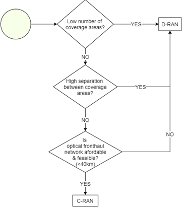

Figure 7
displays the E2E process for defining the RAN architecture.

Figure 7. RAN architecture E2E
process.
A first step is to define RF specifications
in contemplating operating band selection, guard band (for overlay scenarios),
and maximum allowed transmitter power for all BTSs.
The RAN Topology & Scenario
Definition section guides the election of BTS architecture, deployment
scenarios, and BTS type(s) (macro or small cell). It also provides guidance for
evaluating a demarcation point between the RAN and core network if the NaaS
operator isnt deploying its own core network.
Functional Requirements defines required network functionalities based on RAN sharing
schemes and VoLTE, if the latter applies.
The Engineering Guidelines Definition section
provides instructions about defining engineering rules to be considered during
the design process.
BTS operation is conditioned by multiple
parameters. These are:
- Operating frequency band
- Guardband requirements (for
overlay scenarios)
-
Duplexing scheme (which is
associated to the operating band)
-
Transmission power
These parameters must be selected based on NaaS
operator service requirements, available resources, and the respective countrys
policies and regulations.
In this section, selection guidance for the
parameters is provided.
3.1.1 Spectrum Definition
Electromagnetic spectrum is a limited
resource managed by a regulatory body in each country. For this reason, selection
of an appropriate spectrum band and carrier bandwidth depends on factors such
as the countrys regulatory policies, spectrum fees, available spectrum chunks,
MNO partners spectrum position, and unlicensed spectrum conditions.
For overlay scenarios its necessary to set
guard bands between LTE and existing 2G and 3G technologies to avoid
interference between co-located systems and service degradation.
Band Selection
A NaaS operator can select its operating
band based on one of the following considerations:
- Refarming (overlay scenario)
An LTE system can operate over existing 2G GSM and 3G UMTS bands (e.g.,
Band 3: 1800MHz or Band 8: 900MHz). As a result, operators can refarm parts of
the spectrum currently used for 2G or 3G voice and data services to support
LTE. By reusing infrastructure to overlay LTE, this is a cost-effective way to
increase capacity in existing networks without having to bid for new spectrum. But
its only feasible when the NaaS operator or its partners/customers have enough
contiguous spectrum to enable simultaneous operation of two or three
technologies in a frequency band. That is, the operating frequency band has
enough remaining spectrum to insert a new carrier.
- Leverage from partners
spectrum A NaaS operator can use spectrum previously assigned to its partner
(in the event the partner has already been assigned a 4G band).
- Use an unlicensed band Use
of unlicensed spectrum in the 5GHz range has been gaining interest in past years because it permits an
operator to deploy LTE services without having to bid for a licensed spectrum. But
using unlicensed spectrum imposes transmission power limitations, thereby limiting
BTS coverage area. In addition, the NaaS operator needs to verify if other
operations in the area are using unlicensed spectrum, as this may cause
considerable interference. An operator can find additional information about
unlicensed LTE bands in the Primer for LTE in Unlicensed Spectrum.
The NaaS
operator must be aware that LTE operation in unlicensed spectrum may not be
supported by all user devices.
- Get spectrum from government
A NaaS operator can bid to be assigned an LTE band according to country
regulations. Moreover, some countries have been interested in facilitating
unused spectrum to service providers willing to bring mobile services to underserved
populations (see Rhizomatica initiative). The NaaS operator can assess if this same
principle applies in its own environment.
Spectrum bands differ in relation to their
use (coverage or capacity), available bandwidth, clutter type (rural/urban) and
whether theyre paired (spectrum block in a lower frequency band and associated
block in an upper frequency band).
Low frequencies (< 1GHz) provide
extended network coverage at lower cost, as fewer base stations are required to
achieve greater geographic coverage. Higher frequencies (>1 GHz) are
primarily used to cover urban and suburban areas where data traffic is dense
and substantial network capacity is required. (Higher spectrum bands normally
provide larger bandwidths which allow for larger transmission rates). Figure 8
shows spectrum band usage from a coverage and capacity point of view.

Figure
8 Coverage and capacity characteristics of spectrum bands
A NaaS operator can leverage Table 3 information to choose a band
that best fits its business strategy.
|
Spectrum Band
|
Band Size
(available
bandwidth)
|
Propagation
|
Clutter Type (main
use)
|
|
Rural
(coverage)
|
Suburban
(capacity)
|
Urban
|
|
Low Bands
(below 1 GHz)
|
Low
|
High
|
Good
|
Medium
|
Poor
|
|
Medium Bands
(~1800 MHz)
|
High
|
Medium
|
Medium
|
Good
|
Good
|
|
High Bands
(> 2 GHz)
|
Poor
|
Poor
|
Medium
|
High
|
|
Unlicensed Band
(5GHz)
|
Table 3 Main
characteristics of LTE bands
LTE spectrum can operate in a wide range of
bandwidths: 1.4, 3, 5, 10, 15, or 20 MHz.
If the NaaS operator has the opportunity to
select a specific LTE spectrum band for a rural network deployment, its
recommended to aim for a low band (below 1GHz) and a bandwidth that covers its
present and future necessities in terms of coverage and capacity.
Cell bandwidth of 20MHz is often used in
urban and suburban environments in which capacity is the focus. However, having
a 10MHz bandwidth can be a good trade-off between coverage and capacity
performance. A 5MHz bandwidth can be useful to bring connectivity to an uncovered
population but will be limited in its capacity performance. Having large
bandwidths (e.g., higher than 20MHz) introduces the possibility for a capacity
expansion using a second carrier.
For instance, in recent countrywide rural projects
(e.g., Internet para Todos in Peru), most mobile network operators (MNOs) and NaaS
operators have selected Band 28 700MHz and 10MHz cell bandwidth, for this
combination has been proven to provide good-to-provide rural coverage.
Guard Band Requirements (overlay
scenario)
One of the important aspects when
introducing an LTE system on top of existing systems such as 2G-GSM or 3G-UMTS
is the guard band requirement. More specifically, when LTE is collocated with
other technologies in the same site where nearby antennas or sharing scenarios
are adopted, then a guard band needs to be maintained to avoid interference
between collocated systems.
The guard band requirement can be
summarized as follows:
- For collocated LTE and GSM
operating on the same band, then a single carrier of GSM 200 kHz is enough to
avoid interference between the two systems as shown in Figure 9.

Figure 9 Guard band requirement for
collocated LTE and GSM systems in the same band
- If LTE is collocated with
another system in a different band (e.g., LTE at 2.6 GHz and GSM 1800 MHz) then
no guard band is needed.
- No guard band is required if collocated LTE and UMTS operate on the same band, although both systems need to deploy a strict filter on the
RF power amplifiers to avoid interference.
- When FDD-LTE is collocated
with TDD-LTE, then half of the channel bandwidth (whichever is higher between
FDD and TDD) is needed as a guard band.
- Where LTE is collocated with
another LTE system (from another
operator), there is minimum-to-no interference due to the orthogonal nature of the
LTE access scheme. For this reason, there is no need for guard bands if adjacent
technologies are FDD-LTE.
Table 4 summarizes the guard band requirement
for LTE with various collocated technologies.
|
Co-existing
systems
|
Required
Guardband
|
|
LTE band X + GSM band
X
|
0.2 MHz (One GSM
carrier)
|
|
LTE band X + LTE band
Y
|
0 MHz
|
|
LTE band X + UMTS band
X
|
0 MHz (RRU must
implement a strict RF filter to avoid interference)
|
|
LTE-FDD + LTE-TDD
|
Half of the channel BW
(the higher one)
|
|
LTE band X + LTE band
X
|
0 MHz
|
Table 4 Summary
of guard band requirements
3.1.2 LTE
Duplexing Scheme Selection
LTE has two schemes for resource sharing
and to achieve two-way communication (between the eNodeB and UE): frequency
division duplexing (FDD) and time division duplexing (TDD). The FDD scheme uses
one frequency for downlink (DL) and another for uplink (UL), permitting simultaneous
communication between BTS and UE. But in a TDD scheme, both BTS and UE use the
same frequency for their transmissions, thereby preventing simultaneous
communication and implementing a dedicated time slot for transmission (TX) and
for reception (RX). Figure 10 shows the operation of FDD and TDD schemes.

Figure 10 LTE duplexing schemes
The NaaS operator must be aware that the
duplexing scheme also depends on the operating band. Where the selected (available
or allocated) frequency band differs from the chosen duplexing scheme, the
operator will be tied to working with the scheme associated to that band.
Table 5 shows a comparison of the FDD and
TDD schemes between transmission rate, coverage, and CAPEX performance. A NaaS
operator can use this criteria to choose the scheme that best fits its service
requirements.
|
Performance
Item
|
FDD
- LTE
|
TDD
- LTE
|
|
Transmission Rate
Performance
|
FDD allows higher throughputs.
|
Transmission rates cannot be achieved
at similar distances when compared to FDD. However, it allows the
implementation of advanced antenna techniques such as beamforming.
|
|
Site Count
|
Since FDD achieves cell edge
rates at farther distances, the number of sites required to serve a given
area is lower than TDD.
|
In a system comparison using the same frequency
band, the TDD system requires 31% more base stations than FDD when using a
1:1 (same number of RX and TX slots) and 65% more base stations when using a
2:1 (twice the amount of RX than TX slots) due to capacity constraints.
|
|
Spectrum Arrangement
|
FDD operation requires twice
more spectrum for a single LTE carrier for a given channel bandwidth.
|
TDD can operate in an unpaired
spectrum. In addition, it can also be suitable for asymmetric transmission
demands (like fixed wireless access deployments).
|
|
CAPEX
|
The fact that FDD requires fewer
BTSs to serve a specific area using the same frequency allows the NaaS
Operator to incur in lower equipment and infrastructure associated costs.
On the other hand, FDD spectrum
fees can make it a more expensive option.
|
Table 5 FDD
vs TDD performance comparison.
3.1.3
Transmitter Power Definition
Together with the operating band, maximum
transmitter power (per antenna port) is one of the most important parameters to
be considered ahead of the design step. BTS transmission power must be set
based on the following considerations:
- BTS Type There are no
formal rules to define the transmitter power of a BTS based on its type (macro cell or small cell). Table
6 displays classification between BTS types based on transmitter maximum power.
|
BTS
Type
|
Radiated
Power
|
|
Medium Range (Small Cell) BTS
|
Up to 10W (40 dBm)
|
|
Wide Area (Macro Cell) BTS
|
There is no upper limit
for the radiated output power of a Wide Area (Macro Cell) BTS
|
Table 6. BTS classification based on transmitter power.
For small cells, most equipment in the market can achieve
10W (40 dBm) as maximum transmission power. In MORAN scenarios (section 3.3.1)
a 10W small cell can permit the implementation of two independent 5W carriers
(one per mobile operator). This rule should be always considered for small cell
definition because increasing power with a small transmitter height has
diminishing returns.
For transmit power ranges above 10W, network design should consider
a macro cell site for the design process. Maximum power can be set according to
the following point.
- Tower height As detailed
in the RAN HLD module, the higher a transmitter is from the ground, the
wider the coverage area achieved by the BTS. (Tower height consideration doesnt
have an important impact in small cells as theyre usually located in a smaller
infrastructure). In this sense, a NaaS operator can use this principle to set
higher transmitter power for those sites placed on high towers to reach a wider coverage area. Table 7
shows an example of how to define maximum permitted transmitter power for macro
cell sites according to a transmitters mounted height.
|
Transmitter
Height
|
Maximum
Allowed Transmit Power
|
|
< 10m
|
<= 10 W
|
|
From 10m to 20m
|
10W to 20 W
|
|
From 20m to 30m
|
20W to 30W
|
|
> 30m
|
>= 30W
|
Table 7. Tower height and Maximum Allowed Transmitter Power
relation example.
- Local and regional
regulation The NaaS operator must be aware of any local or regional
regulations that prevent high transmit powers to be used. Such regulations are
mandatory to be followed by all operators. For example, maximum permitted
transmitter power for a certain region might be set to 30W. Here, the operator must
arrange its transmitter height vs. maximum permitted transmitter power considering
the 30W limitation.
This section guides the NaaS operator on
its way to standardizing the topology that will be implemented on the RAN,
considering possible scenarios that include:
- D-RAN vs C-RAN Architecture.
-
Greenfield and/or overlay
deployment.
-
Macro cells and/or Small
cells
-
Use of a demarcation point
between access and core network
3.2.1
D-RAN vs C-RAN Definition
As shown in Table 11, there are several
tradeoffs that must be considered when choosing between D-RAN and C-RAN. In
addition, this selection will condition several aspects of the overall
networkmainly transport and core design and infrastructure.
Despite being a promising solution in terms
of performance management and being future-proof, C-RAN is only feasible in a
reduced number of scenarios. Considering this, deciding between
D-RAN and C-RAN can be reduced to the following points:
- Number of coverage areas Defined
as towns or cities that will be covered. A C-RAN architecture isnt efficient
for less than three coverage areas.
- Separation between coverage
areas If a separation greater that 40 km exists between coverage areas, C-RAN
architecture isnt feasible due to latency issues
- Optical fronthaul network C-RAN
requires an optical fronthaul network that comes with a high investment. Link lengths
must also be below 40km site
to operate properly. C-RAN can only be considered if operator can afford construction
of a fronthaul (fiber) network.
The methodology
to select between a D-RAN or C-RAN architecture is shown in Figure 11:

Figure 11 ‒ Methodology for selecting D-RAN or C-RAN architecture
3.2.2 Greenfield/Overlay Scenarios Identification
A NaaS operator can identify its initial
scenarios by considering the following points:
- Greenfield site definition
No existing sites available.
- Overlay site definition The
operator already has an existing operating network in desired region and all
sites on the network have enough resources to support adding a new RAT.
- Greenfield + overlay The
operator already has an existing operating network in desired region, but only
some sites have enough resources (i.e., available tower space and enough power
supply for new equipment) to support a new RAT addition. Remaining sites will
need to be greenfield.
Figure 12 shows a methodology to identify initial
scenarios in a NaaS operators environment. The network can comprise a combination
of greenfield and overlay sites if conditions are met.

Figure 12 Methodology to select between
greenfield and overlay scenarios
Existing sites must be able to accommodate
new infrastructure (e.g., BBU, RRUs, antennas) to be considered as overlays.
This means they must have enough tower space and power sources for new
equipment. A site survey should be held to assess if existing sites are overlay
deployment candidates. The RAN HLD module provides a questionnaire for determining
whether existing sites can be used for an overlay. Such an evaluation must be made
by way of a site survey at the site in question. Site survey creation details are
in the Site Survey module.
3.2.3 Macro/Small
Cell Scenario Definition
A NaaS operator network can comprise a
combination of both macro and small cells. Table 8
is a technical comparison between the cell types.
|
|
Macro
Cell BTS
|
Small
Cell BTS
|
|
Main purpose
|
Coverage and capacity
|
Additional Capacity and
cover small targeted areas.
Can be selected if
Macro Cell BTS is too expensive.
|
|
Transmit Power
|
Up to 80W (depending
on equipment suppliers capabilities)
|
Up to 10W
|
|
Cell Coverage
|
~5 - 10 km
|
~2 - 5 km
|
|
Site Solution
|
BBU + RRU + Antenna
|
All-in-One equipment.
Integrated BBU and
RRUs (in some cases, antennas can also be integrated into the same box.
|
|
Antenna Configurations
|
2x2, 4x4 MIMO
|
2x2 MIMO
|
|
Installation options
|
Tall towers (10m
40m)
Rooftops
|
Small towers (up to
10m)
Lamp poles
Rooftops
|
Table 8 Macro
and small cell BTS technical comparison
Selecting BTS types must take into
consideration several conditions ranging from technical, infrastructural, and
financial constraints to population distribution and traffic behavior. The
combination of these conditions could present scenarios that vary from one
region to another. Table 9 displays a scenario definition based on population
classification.
|
Town
Size
|
Population
Density
|
Separation
between Towns
|
|
Small
|
Low
|
High
|
|
Small
|
High
|
High / Low
|
|
Big
|
Low
|
High / Low
|
|
Big
|
High
|
Low
|
Table 9
Scenario definition
Multiple scenarios might require considering
a wide range of BTS types and configurations.
To create a homogeneous network (that will
simplify future processes such as site catalog, network construction, and
maintenance, et al.), the NaaS operator can reduce all BTS configurations to a
few options. While having a low number of configurations might limit performance,
it provides for cost-effective and easy network operation.
Table 10 shows BTS configurations for the operator
to consider for its entire network. The design team will decide during the HLD
process which option best suits a specific area.
|
BTS
Type
|
Number
of sectors per BTS
|
Tower
Hight
|
|
Small Cells
|
-
1 sector (omni)
|
Indistinct
|
|
Macro Cells
|
-
1 sector (directional)
(Only for highway
coverage)
|
Indistinct
|
|
-
2 sectors (directional)
|
10m to 20m
|
|
-
3 sectors (directional)
|
> 20m
|
Table 10
Number of sectors per BTS type
3.2.4
Demarcation Point
Network demarcation points divides it into
two or more sections. For example, S-GW acts
as a demarcation point between the RAN and core network.
A RAN demarcation point is required if the
core network isnt maintained/owned by the NaaS operator. The demarcation point
provides control over RAN performance and to perform charging activities to its
customers (mobile operators). If a mobile core deployment is considered as part
of the architecture, then the demarcation point is the SGW or PDN gateway. But
if there are no plans for a mobile core, then a demarcation point must be
considered in the RAN.
The following are some functionalities
introduced by a RAN demarcation point:
- NaaS operator independence
Creates a logical separation between an MNO and NaaS operator network. It enables
deployment, configuration, operation, and monitoring
of sites without depending on the MNO.
- Security towards core
network Provides a security layer protecting the core network.
Some demarcation points that can be
implemented in the RAN are:
- RAN gateway (GW) for traffic
aggregation ‒ This GW improves management and performance operations in
multi-RAT or multi-MNO scenarios.
Additional functionalities introduced by a RAN GW are:
- RAN homologation - Abstracts
the complexity of multi-RAT solutions toward transport networks.
- Multi-vendor support Connectivity
with equipment from different suppliers.
- Connection with third parties
Facilitates interconnection of third parties
to the MNOs.
The general
RAN GW concept is shown in Figure 13.

Figure 13. RAN gateway concept.
- IPsec Gateway
IPsec gateway An IPsec GW
can be introduced to provide tunneling termination toward RAN and the core
network, thereby improving network security for all parties. The IPsec GW
concept is shown in Figure 14.

Figure 14. IPsec gateway concept.
The NaaS operator must
be aware that demarcation point functionalities can vary from one equipment
supplier to another.
This section defines required RAN
functionalities for the defined topology operation and of service requirements
defined as part of the NaaS operator business strategy.
3.3.1 RAN
Sharing Scenarios Definition
A central NaaS operator strategy is to
enable business for MNOs in new areas without the latter having to invest in
network infrastructure. Instead, MNOs can provide network services using the NaaS
operators infrastructure and network resources.
An operator can provide its RAN
infrastructure to multiple MNOs based on the following sharing schemes:
- Multi-operator RAN (MORAN)
This scheme can share BBUs between MNOs but not radio carriers (RRUs arent
shared). This implies that every MNO will serve its subscribers in its own
spectrum chunk.
- Multi-operator core network
(MOCN) All RAN elements (BBUs and RRUs) are shared. It permits radio carriers
to also be shared, making MOCN the most resource-efficient. It only requires configuration
in the RANmaking MOCN ideal for quick coverage expansion. By activating it on
an existing network, subscribers from a new MNO customer can get access to the NaaS
operator network. Mobile cores of the MNOs using the network are independent.
- Roaming agreements between NaaS
operator and MNO In this scheme no RAN resources are shared. Instead, the
operator owns the RAN and core network, redirecting traffic to MNOs core networks.
In this case, a user might have to enable roaming on their phone to access the
NaaS network.
A NaaS operator can use Table 11 to decide
which sharing scheme best fits its strategic plans.
|
MORAN
|
MOCN
|
Roaming
|
|
MNOs willing to use their own spectrum.
NaaS operator needs to select RAN equipment based on this
constraint
|
This scheme can be applied in the following scenarios:
-
NaaS operator has its own
spectrum
-
One MNO will share its
spectrum with others
-
Two or more MNOs will
combine their spectrums
|
Can be applied if NaaS operator will be deploying both the RAN and
the core network. An agreement can be reached to redirect traffic to MNOs own
core networks.
|
Table 11 RAN sharing
application schemes
Figure 15
illustrates the implementation of each RAN sharing scheme.

Figure 15 Possible ran sharing scheme
Table 12 summarizes the technical
characteristics of each scheme.
|
|
MORAN
|
MOCN
|
Roaming
|
|
Spectrum
Resources
|
Each MNO uses its own spectrum resources
(independent cells
per MNO)
|
Spectrum is shared between MNOs
(shared cells for all MNOs)
|
NaaS operator provides spectrum used for
all MNOs
|
|
Radio Equipment Shared
|
BBU shared
|
BBU and RRUs shared
|
No share
|
|
Autonomy for the NaaS Operator
|
NaaS operator depends on MNO spectrum
Agreement required between MNOs
and NaaS operator
|
Requirements agreement among MNOs and regulator
approval
|
Requires agreement between NaaS
operator and MNOs
|
|
Capacity Limitation
|
Each MNO is limited
by its own spectrum
|
Capacity limited by
pooled MNO spectrum
|
Capacity limited by spectrum provided by
the NaaS operator
|
|
Configuration Upgrade
|
Each MNO can independently upgrade
its radio configuration
|
Radio configurations impact all MNOs
|
Impacts on NaaS operator customers
and those roaming
|
|
Introduce an additional MNO
|
Requires additional
RAN equipment
|
Can be accommodated in existing
equipment (in scenarios where three MNOs can operate with two or fewer carriers)
|
Can be accommodated in existing NaaS
operator equipment (if enough available capacity)
|
Table 12 RAN sharing schemes characteristics
3.3.2 VoLTE Implementation
Evaluation
Voice over LTE (VoLTE) is the 4G-LTE s
network solution providing high-quality voice and video services. This section
only applies if (at strategy level) the NaaS operator has decided to provide
voice services.
Implementing VoLTE on a network requires the
following:
- Integration of an IP
multimedia subsystem (IMS) on the core structure, as standard EPC
is not able to support VoLTE on its own. A
possible strategy is to reach an agreement with MNO(s) to redirect traffic from
the NaaS operators core network to the MNOs IMS, or from the operators RAN
to the MNOs core network (that includes an IMS).
- Additional RAN functionalities
(detailed in section 3.3.3) are basic for VoLTE operation
in the air interface.
These requirements represent an addition to
network CAPEX, thus increasing NaaS operator investment. Additionally, configuration
of VoLTE on a BTS equates to extra integration efforts.
However, a NaaS operator can avoid implementing
VoLTE if LTE BTSs are deployed as an overlay in locations where existing 2G
and/or 3G sites are operating. Voice in overlay scenarios can be carried by existing
RATs using circuit switched fallback (CSFB) functionality that permits connected
UE to move to 2G-GSM or 3G-UMTS so as to complete the voice communication. Once
the voice call is over, the UE returns to LTE. The CSFB principle is shown in Figure
16.

Figure 16 Circuit switched fallback principle
For these reasons, implementing CSFB
functionality is preferable from both a financial and site configuration point
of view. However, the CSFB principle doesnt apply where there are no existing
sites operating with 2G and/or 3G. In other words, VoLTE is the only option to
provide voice service in greenfield scenarios.
Figure 17 shows strategic criteria to guide
a NaaS operator in the VoLTE decision-making process:

Figure 17 VoLTE decision-making process
3.3.3
Equipment Requirements Definition
Network equipment for RAN deployment must support
the selected architecture established up
to this point and depends on the BTS type (macro cell or small cell). RAN
features and functional requirements must also be considered for its implementation
and operation.
Table 13 summarizes required equipment and features
based on the defined RAN architecture.
NaaS Operator
can use the RAN Equipment Requirements Template to
create its own version.
|
Category
|
Item
|
Comment
|
|
RF
Parameters
|
4G operating band
|
Defined in section 3.1.1
|
|
4G operating bandwidth
|
|
4G duplexing scheme
|
Defined in section 3.1.2
|
|
Transmitter power
|
Defined in section 3.1.3
|
|
Modulation scheme
|
Basic requirements for LTE operation:
-
64 QAM DL/16 QAM UL
Improved capacity performance
can be reached with:
-
256 QAM DL
-
64 QAM UL
|
|
MIMO Scheme
|
Basic requirements for LTE operation:
-
2x2 MIMO
Improved coverage and capacity performance can be reached with:
-
4x4 MIMO
|
|
Additional Functionalities
|
Support for C-RAN
|
Defined in section 3.2.1
|
|
Support of RAN sharing scheme
|
|
Robust header compression (RoC)
|
Required for VoLTE operation
|
|
Support of QCI 1
(conversational voice)
|
|
TTI bundling
|
|
Support of IMS emergency sessions
|
|
Support of CSFB to 2G
|
Required for CSFB operation
|
|
Support of CSFB to 3G
|
Table 13
Equipment requirements based on RAN architecture specifications
Engineering guidelines are a set of rules to
be followed during the high-level design (HLD) process. They must correlate
with the defined RAN architecture and cover minimum requirements for the
network to function as desired. The network designer will establish site
configurations based on them, which cover radio (coverage and capacity) as well
as network infrastructure aspects.
A NaaS operator can use the Engineering Guidelines Template to set the rules
to be considered during HLD. Recommended values for each parameter are provided
as a starting point.
3.4.1
Coverage & Capacity Guidelines Definition
Guidelines for the radio aspects include
parameters that must be considered during network dimensioning. Table 14
summarizes required coverage and capacity parameters that must be set before HLD
(additional parameters are in the RAN HLD module).
|
Category
|
Item
|
Description
|
Recommendation
|
|
Coverage Guidelines
|
Cell-edge coverage probability
|
Probability that RF signal strength at cell edge will
meet desired level
|
70% - 80%
|
|
Interference
margin
|
To be considered to account
for signal degradation due to interference from other BTS
|
3 dB
|
|
UE receiver sensitivity
|
Minimum signal strength required for the UE to
decode a message
|
Value around
-105 dBm to
-100 dBm can be set
|
|
Body loss
|
Loss generated due to
signal blocking and
absorption by human body
|
0 dB is
recommended
value
|
|
Capacity Guidelines
|
Service penetration
|
Percentage of overall
covered population
Based on NaaS operators business case
|
Values around 40%
to 60% can be used
for rural environments
|
|
Active users
at busy hour
|
Average number of active subscribers in the busiest
hour of day
|
Values around 20% (simultaneous/active
users) can be considered
|
|
Average busy hour DL & UL throughput
|
Network throughput during busiest hour of the day
These parameters provided
by NaaS operator depending
on specific environment
|
Values vary from 16 kbps ‒ 128 kbps per
user
|
Table 14. Description of
coverage and capacity engineering rules categories.
3.4.2 Infrastructure Guidelines
Definition
Here are guidelines for infrastructure
aspects required to build site configurations during the HLD process. Table 15
summarizes the categories of the infrastructure engineering rules:
|
Category
|
Item
|
Description
|
Instruction
|
|
Tower
|
Maximum tower
height (greenfield scenarios)
|
Maximum considered
tower height
|
Depends on the region under consideration (government
restrictions) and available CAPEX
The higher the tower
, the more expensive
|
|
Number of sectors
|
Number of sectors considered per site
|
Trade-off between number
of sectors and tower height depends on NaaS operator financial constraints
|
Table 15
Description of infrastructure requirements categories
A RAN architecture report must be
elaborated to provide overall network and engineering guidelines to the design
team. Additionally, equipment requirements can be considered for the RFx
process. The report must cover all considerations that define each BTS in the
RAN and its main functionalities.
- Reference RAN architecture ‒ Defined overall RAN
architecture.
- RF Specification
- Band and guard band
- Transmitter power
- RAN Topology and Scenarios
- BTS architecture and type
- Deployment scenario
- Demarcation point
- Functional requirements
- RAN sharing scheme
- Voice services implementation
- Equipment and functionalities requirements
- Engineering Guidelines
- Coverage, capacity, and
infrastructure rules to be considered during the design process.
A NaaS operator can use the RAN Architecture Report template as a reference to create
its own version.
Table 16 lists the
supported bands frequency division duplex (FDD) LTE.

Table 16 FDD-LTE 3GPP bands
Table 17 lists bands
for time division duplex (TDD) LTE according to 3GPP.

Table 17 TDD-LTE 3GPP bands